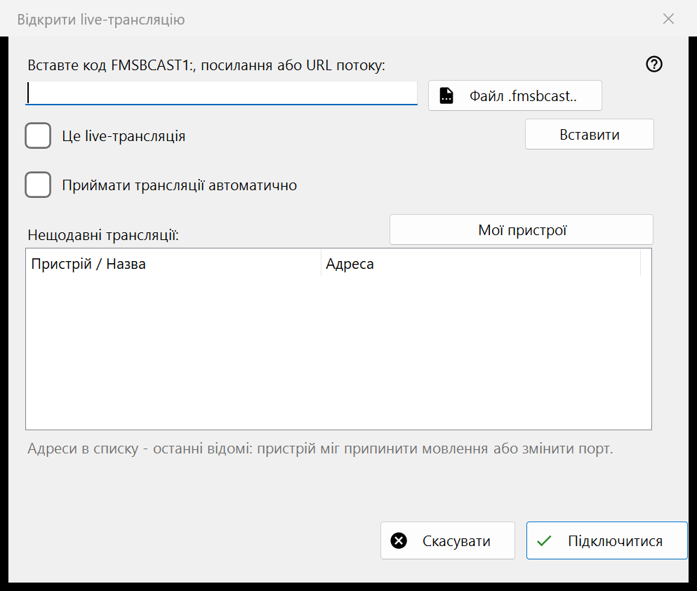
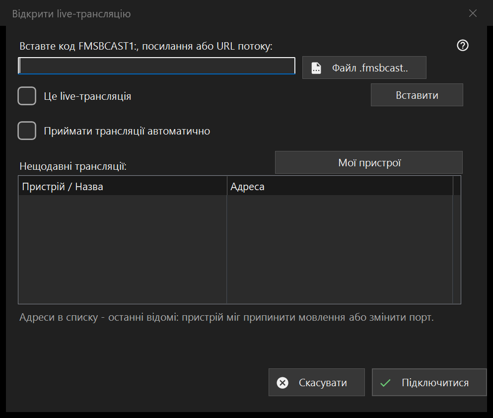

Прямий ефір
Призначення
Вставте код FMSBCAST1:, посилання або URL потоку чи виберіть файл .fmsbcast. Позначайте звичайний URL як прямий ефір лише для живого джерела; інакше він відкриється як звичайне медіа. Натисніть «Підключитися» та введіть пароль глядача, якщо його запитано. Нещодавня адреса може перестати працювати після зупинки мовника або зміни порту. Автоматичне приймання Cast вмикається окремо та явно.


Порядок дій
Вставте код FMSBCAST1:, посилання або URL потоку чи виберіть файл .fmsbcast. Позначайте звичайний URL як прямий ефір лише для живого джерела; інакше він відкриється як звичайне медіа. Натисніть «Підключитися» та введіть пароль глядача, якщо його запитано. Нещодавня адреса може перестати працювати після зупинки мовника або зміни порту. Автоматичне приймання Cast вмикається окремо та явно.
Елементи вікна
FMSBCAST1: / .fmsbcast
Вставте код FMSBCAST1:, посилання або URL потоку чи виберіть файл .fmsbcast. Позначайте звичайний URL як прямий ефір лише для живого джерела; інакше він відкриється як звичайне медіа. Натисніть «Підключитися» та введіть пароль глядача, якщо його запитано. Нещодавня адреса може перестати працювати після зупинки мовника або зміни порту. Автоматичне приймання Cast вмикається окремо та явно.
Налаштування менеджера · Налаштування спільного доступу SFTP · Налаштування сервера обміну